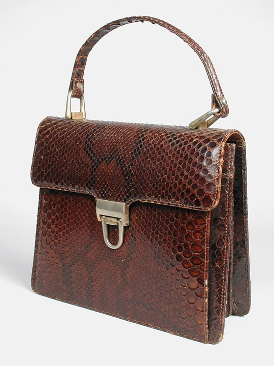
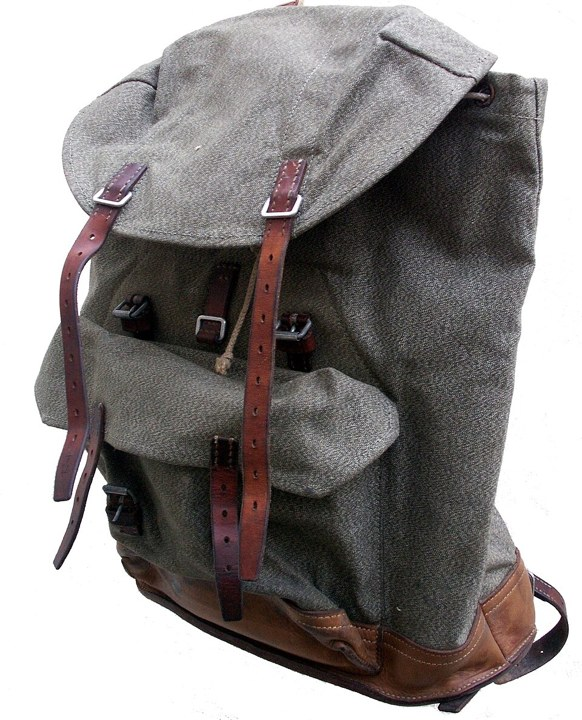
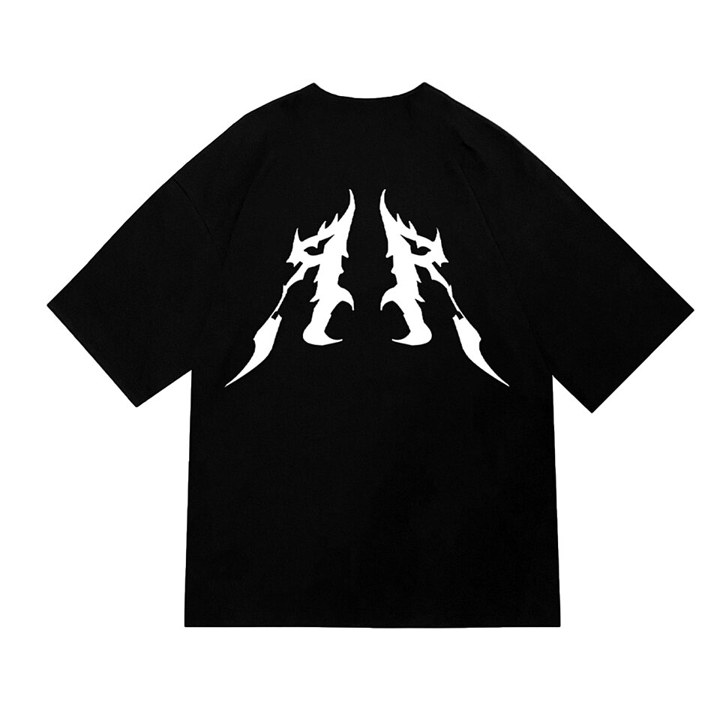
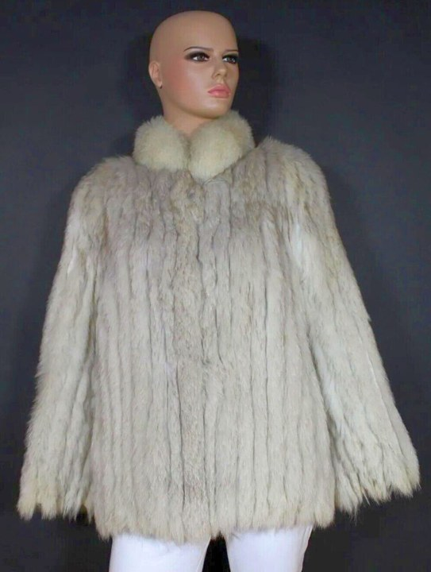
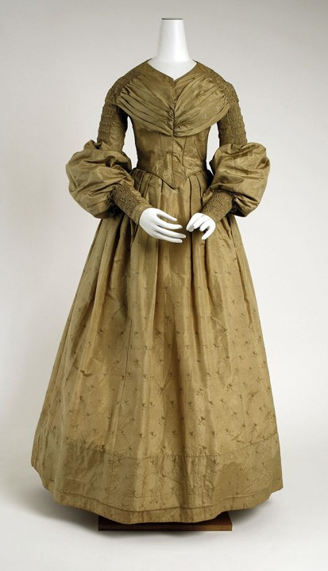
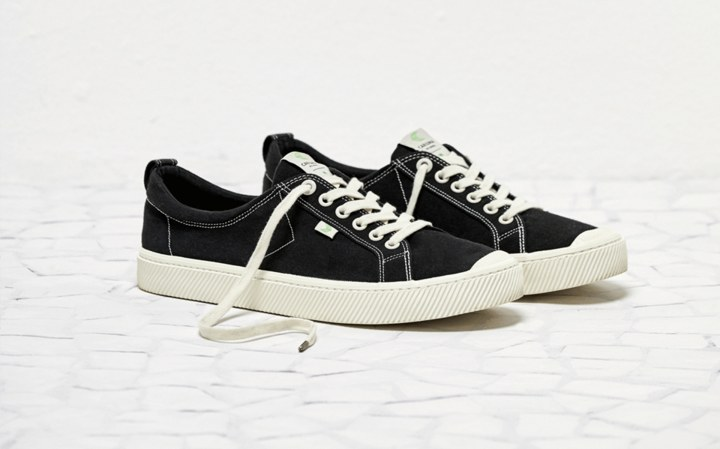

옷·가방 3D 변환 비교
모델: TripoSR (stabilityai/TripoSR, MIT) · 추론: OpenVINO 2026.4 · 배경 제거: rembg isnet-general-use
Intel i7-1260P 노트북 · Iris Xe 내장 GPU · NVIDIA GPU 없음 · 메시 해상도 384 · 텍스처 2048px · 최적화 = 텍스처 굽기 전 면 수 6만 개로 축소
| 항목 | 기본 시간 | 면 수 | 용량 | 최적화 (면 6만 개) 시간 | 면 수 | 용량 |
|---|---|---|---|---|---|---|
| 핸드백 | 166초 | 169,452 | 6.4MB | 71초 | 60,000 | 4.0MB |
| 백팩 | 280초 | 280,732 | 9.4MB | 55초 | 60,000 | 4.2MB |
| 티셔츠 (바닥에 펼친 사진) | 140초 | 176,740 | 5.4MB | 65초 | 60,000 | 2.7MB |
| 재킷 (마네킹) | 385초 | 208,980 | 7.4MB | 60초 | 60,000 | 3.8MB |
| 드레스 (드레스폼) | 349초 | 180,492 | 6.6MB | 89초 | 60,000 | 3.7MB |
| 운동화 (두 짝) | 134초 | 138,320 | 5.0MB | 62초 | 60,000 | 3.3MB |
핸드백
입력 사진

기본
최적화 (면 6만 개)
백팩
입력 사진

기본
최적화 (면 6만 개)
티셔츠 (바닥에 펼친 사진)
입력 사진

기본
최적화 (면 6만 개)
재킷 (마네킹)
입력 사진

기본
최적화 (면 6만 개)
드레스 (드레스폼)
입력 사진

기본
최적화 (면 6만 개)
운동화 (두 짝)
입력 사진

기본
최적화 (면 6만 개)
CLO 수준 구현을 위한 검토
1. 테스트 결과
- 가방, 신발은 전체 모양이 비교적 잘 나왔습니다. 다만 끈, 버클, 지퍼 같은 세부는 뭉개지고, 뒷면은 AI가 추정해서 만든 부분이라 정확하지 않습니다.
- 옷은 마네킹에 입혀 촬영한 사진은 부피감이 잘 나왔습니다. 바닥에 펼쳐 찍은 티셔츠는 두께 정보가 없어 구멍이 생기고, 프린트 부분을 입체로 인식하는 문제가 있었습니다.
- 사진을 512px로 줄여서 처리하기 때문에 로고나 프린트는 흐리게 나옵니다.
- 현재 노트북(외장 GPU 없음) 기준으로 한 장에 약 1분 걸립니다(최적화 설정). AI 추론은 6~8초이고, 나머지는 메시 정리 시간입니다.
2. 현재 방식과 CLO 비교
| 구분 | 현재 (TripoSR) | CLO |
|---|---|---|
| 생성 방식 | 사진을 보고 모양을 추정해서 생성 | 옷 패턴을 봉제해서 물리 시뮬레이션 |
| 결과물 | 고정된 형태의 모형 | 실제 옷처럼 늘어지고 주름이 생김 |
| 아바타 착용 | 불가 | 가능, 사이즈별 핏 확인 가능 |
| 원단 표현 | 색과 무늬만 반영 | 두께, 신축성 등 실측값 반영 |
| 생산 연계 | 없음 | 패턴 파일(DXF), 테크팩 출력 |
| 장비 | 일반 노트북 | 고사양 GPU PC |
3. 단계별 필요 사항
| 단계 | 목표 | 활용 가능한 모델 / 도구 | 장비 | 난이도 |
|---|---|---|---|---|
| 1 | 현재 방식 유지, 3D 품질 개선 | Hunyuan3D-2.1, TRELLIS, Stable Fast 3D | NVIDIA GPU 16~24GB 이상 또는 클라우드 | 낮음 |
| 2 | 모델 착용 이미지 생성 (2D 피팅) | CatVTON, IDM-VTON | NVIDIA GPU 8~16GB | 낮음~보통 |
| 3 | 사진에서 패턴 추출 후 아바타 착용 | ChatGarment, GarmentCode, ContourCraft / Blender Cloth / NVIDIA Warp, SMPL-X | NVIDIA GPU 24GB 이상 | 높음 (연구 단계) |
| 4 | CLO 수준 전체 기능 | 패턴 편집기, 실시간 시뮬레이션, 원단 측정, DXF 연동 개발 | 고사양 PC + 개발 인력 | 매우 높음 |
4. 품질 개선을 위해 필요한 것
- 모델: 여러 장 입력과 고해상도 텍스처를 지원하는 최신 모델로 교체가 필요하나 현재 노트북 기준으로 수행 했습니다.(1단계 모델 TripoSR은 사진 1장, 512px 입력이 한계)
- 옷의 사실감: 모양 추정 방식으로는 한계가 있어 패턴 기반 시뮬레이션(3단계)이 필요합니다. 원단 정보가 없으면 주름이나 처짐이 실제와 다르게 나옵니다.
- 데이터: 상품별 실제 패턴, 치수, 원단 정보가 있으면 정확도가 크게 올라갑니다.
- 장비: 1단계부터 NVIDIA GPU가 필요합니다(최소 16GB, 24GB 권장). 현재 노트북으로는 TripoSR 수준까지 가능합니다.
5. 하드웨어 최소 / 권장 사양
| 단계 | 구분 | GPU | CPU | RAM | 저장공간 |
|---|---|---|---|---|---|
| 현재 (TripoSR) | 최소 | 내장 GPU (현재 노트북) | 4코어 이상 | 16GB | SSD 20GB |
| 1단계 (3D 품질 개선) | 최소 | NVIDIA 16GB (RTX 4060 Ti 16GB급) | 8코어 | 32GB | SSD 200GB |
| 권장 | NVIDIA 24GB 이상 (RTX 4090 / 5090급) | 12코어 이상 | 64GB | NVMe SSD 1TB | |
| 2단계 (2D 피팅) | 최소 | NVIDIA 12GB | 8코어 | 32GB | SSD 200GB |
| 권장 | NVIDIA 24GB | 12코어 이상 | 64GB | NVMe SSD 1TB | |
| 3단계 (패턴 + 시뮬레이션) | 최소 | NVIDIA 24GB | 16코어 | 64GB | NVMe SSD 2TB |
| 권장 | NVIDIA 48GB 이상 (RTX 6000급) 또는 24GB 2장 | 16코어 이상 | 128GB | NVMe SSD 4TB |
- 모델을 그대로 가져다 쓰는 경우(추론) 기준입니다. 모델을 우리 데이터로 추가 학습하려면 아래 학습용 장비가 별도로 필요합니다.
- 사양은 각 모델 공개 자료를 참고한 대략적인 기준이며, 실제 도입 전 테스트로 확인이 필요합니다.
6. 정리
- 쇼핑몰 3D 미리보기 수준은 1단계(GPU 확보, 최신 모델 적용, 촬영 가이드)로 가능합니다. 가방, 신발은 실사용 수준까지 기대할 수 있습니다.
- 모델 착용 이미지가 필요하면 2단계를 추가합니다.
- CLO처럼 패턴, 핏, 원단까지 다루려면 3단계 이상이 필요합니다. 개발시 성능좋은 자원이 필요할 수 있습니다.